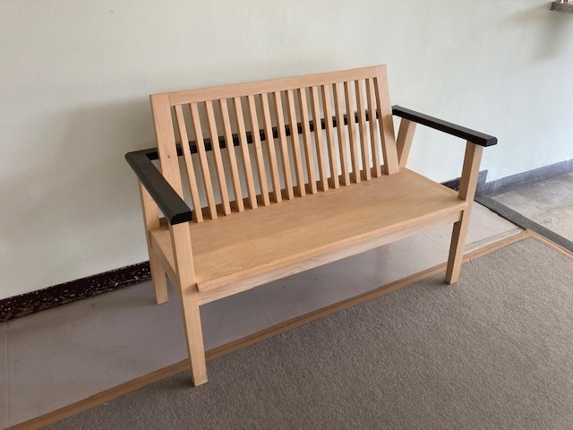
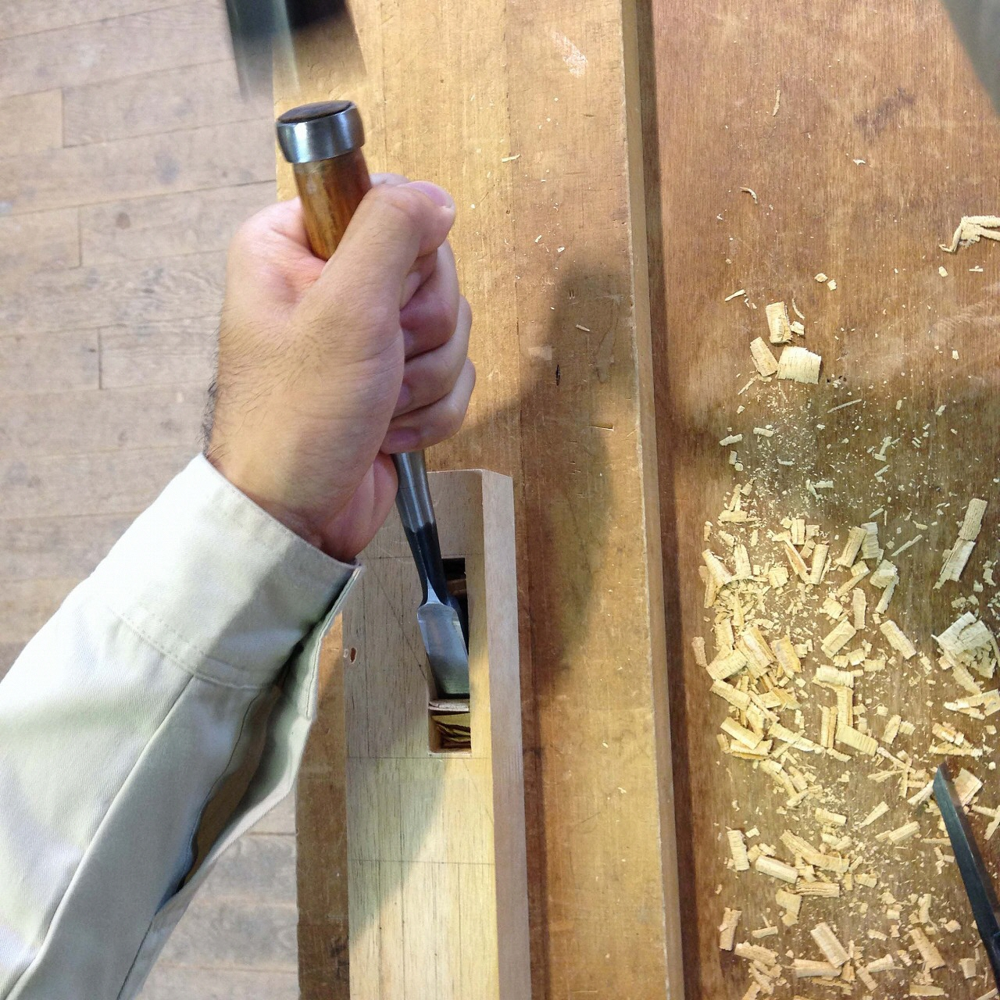
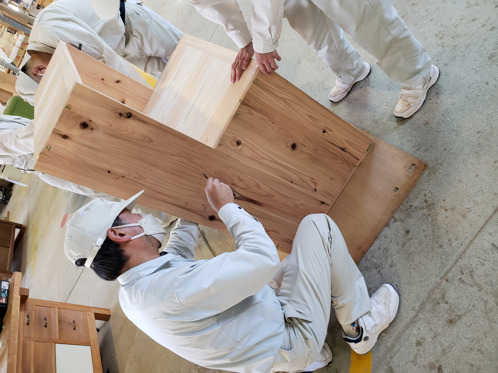
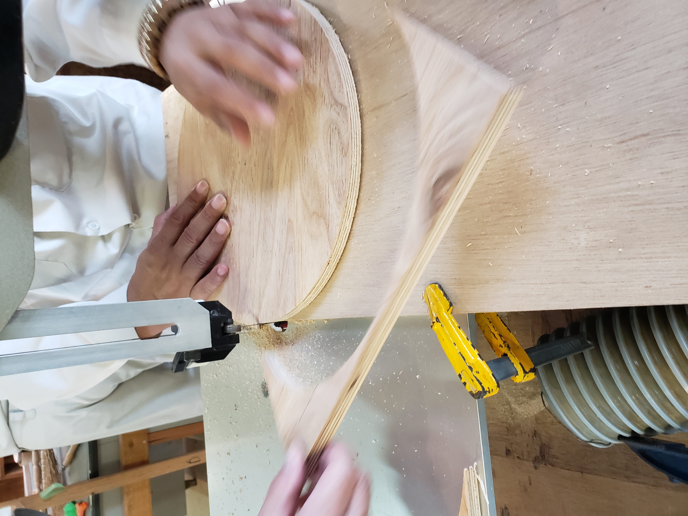

家具工芸科
木工全般の技術を身に付ける実技訓練と、材料学や工作法、製品設計、安全衛生や経営学も学び、木工の専門家を育成するカリキュラムになっています。職場実習などによって実際の仕事を体験し、この分野で働く意欲を高めていきます。
修了生は日本各地の家具製造業、建具製造業及び木工に関する業界へ就職しています。独立起業し活躍する修了生も多数います。

家具工芸科はこんな人におすすめ！
- モノづくりの仕事がしたい！
- 木を扱う仕事に就きたい！
- 将来は起業してみたい！
訓練科の特徴
実践的な木工技術の習得
家具の設計から製作までを一貫して学びます。木材の特性を理解し、木工作業の基礎から高度な技術までを実践的に習得。自分の手で家具を作り上げる達成感を味わいながら、確かな技術を身に付けます。

デザイン力と創造性を育成
機能性と美しさを兼ね備えた家具を作るために、デザイン力を磨きます。CADを使った設計から実際の製作までを体験し、創造性を発揮しながら独自の作品を作り出すスキルを習得します。
現場で役立つ知識と技術
安全管理や材料の選定、製作手法に至るまで、現場で役立つ知識と技術を総合的に学びます。業界標準の機器や工具を用い、実際の製作プロセスを体験しながら、即戦力として活躍できる力を身に付けます。

カリキュラム
-
学科
木材加工法、工作法、木工機械、安全衛生、材料学、製品設計、デザイン、経営学 -
実技
工具の取り扱い、加工練習、工作練習、機械操作、製図、家具製作、塗装、安全作業、木材乾燥 -
その他
各種施設見学、木工ワークショップ実施、職場実習(インターンシップ)、外部講師による実技指導 など
時間割例
| 月 | 火 | 水 | 木 | 金 | |
|---|---|---|---|---|---|
| 1限目 （08:50～09:35） |
材料 | 製品設計 | 工作法 | 安全衛生 ・生産 |
加工法 |
| 2限目 （09:35～10:20） |
|||||
| 3限目 （10:30～11:15） |
|||||
| 4限目 （11:15～12:00） |
|||||
| 5限目 （13:00～13:45） |
実習 | 実習 | デザイン | 実習 | 実習 |
| 6限目 （13:45～14:30） |
|||||
| 7限目 （14:40～15:25） |
|||||
| 8限目 （15:25～16:10） |
主な就職先
家具・建具製造
- 家具製造会社
- 木製品製造会社
- 建具製造会社
- 個人工房など
設計・デザイン
- 設計事務所
- 工務店
- デザイナー
- 木工関連企業など

その他関連職種
- 林業関係
- 公的施設
- 福祉施設・作業所指導員
- 地域おこし協力隊 など
起業について
訓練期間中に準備を進め、修了後に自営業として起業される方もいます。また、起業・独立した修了生向けには、家具工芸科を修了し奈良県内を中心に起業・独立した方たちによる起業ネットワークの活動により支援も行っています。

目指せる資格
- 技能講習（フォークリフト運転）
- ２級家具技能士
- ２級木製家具建具技能士
- 技能照査(技能士補取得)
専門校展
家具工芸科では、１年間の実習の中で作成した家具を、専門校展でご来場いただいた方に販売します。
年間スケジュール
| 4月 | 入校式 |
|---|---|
| 5月 | |
| 6月 | |
| 7月 | |
| 8月 | |
| 9月 |
| 10月 | |
|---|---|
| 11月 | |
| 12月 | |
| 1月 | 専門校展 |
| 2月 | 技能照査 |
| 3月 | 修了式 |